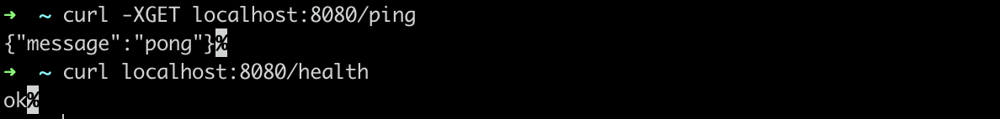

Airren Ren
Friday, August 21, 2020
「Gin」Gin入门
学好一个框架或者一门语言，最好的方法就是要学会看官方的Document。几乎所有的博客只是把自己对官方文档的理解重新加工整理出来而已，增加了自己的主管想法。
刚入门的时候面对英文文档可能一头雾水，但是当你坚持下来，你会发现，这些官方文档写的要比那些博客好的多，表述精确的多。
以后我的文章会主要参考官方文档展开介绍，顺带加一点自己的理解
1. Gin 简介
The fastest full-featured web freamwork for Go. Crystal clear.

- 快
- 支持中间件
- Crash还原
- JSON验证
- 路由分组
- 错误日志收集
- 模板渲染
- 可扩展
2. 快速用Gin搭建一个Web服务
1go get -u github.com/gin-gonic/gin # install Gin
2
3mkdir gin_demo && cd gin_demo
4
5vi main.go
main.go的内容如下
1package main
2
3import (
4 "net/http"
5 "github.com/gin-gonic/gin"
6
7)
8
9func main(){
10 r := gin.Default()
11
12 r.GET("/ping", func(c *gin.Context){
13 c.JSON(200, gin.H{
14 "message":"pong",
15 })
16 })
17
18 r.GET("/health", func(c *gin.Context){
19 c.String(http.StatusOK, "ok")
20 })
21 r.Run()
22}
然后初始化GoModule, 运行项目
1go mod init xxx/xxx/gin_demo
2
3go run main.go

如上图所示，一个简单的web服务就搭建成功了
测试一下访问情况

服务端日志

由于gin.Default() 返回的gin.Engine (router)自带Logger中间件，所以可以在日志中看到具体的请求与响应情况。看一眼源码
1// Default returns an Engine instance with the Logger and Recovery middleware already attached.
2func Default() *Engine {
3 debugPrintWARNINGDefault()
4 engine := New()
5 engine.Use(Logger(), Recovery())
6 return engine
7}
Gin 项目目录
1├─ Project Name
2│ ├─ config //配置文件
3│ ├── ...
4│ ├─ controller //控制器层，验证提交的数据，将验证完成的数据提交给service
5│ ├── ...
6│ ├─ service //业务层， 只完成业务逻辑得开发，不进行数据库的操作
7│ ├── ...
8│ ├─ repository //数据库操作层 dal/ dao; 数据库操作层，写，多表插入，多表查询，不写业务代码
9│ ├── ...
10│ ├─ model //数据库ORM
11│ ├── ...
12│ ├─ entity //实体 写返回数据的结构体。写controller层方法参数验证的结构体
13│ ├── ...
14│ ├─ proto //proto文件 写 gRPC 的 *.pb.go 文件。
15│ ├── ...
16│ ├─ router //路由
17│ ├── middleware //路由中间件 （鉴权，日志，异常捕获）
18│ ├── ...
19│ ├── ...
20│ ├─ util //工具类，项目通用的工具包
21│ ├── ...
22│ ├─ vendor //扩展包 第三方依赖，通常使用go mod 管理
23│ ├── ...
24│ ├─ main.go //入口文件
参考资料：